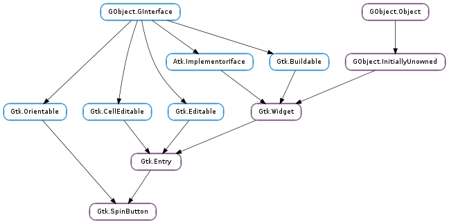

| static | new(adjustment, climb_rate, digits) |
| static | new_with_range(min, max, step) |
| configure(adjustment, climb_rate, digits) | |
| get_adjustment() | |
| get_digits() | |
| get_increments() | |
| get_numeric() | |
| get_range() | |
| get_snap_to_ticks() | |
| get_update_policy() | |
| get_value() | |
| get_value_as_int() | |
| get_wrap() | |
| set_adjustment(adjustment) | |
| set_digits(digits) | |
| set_increments(step, page) | |
| set_numeric(numeric) | |
| set_range(min, max) | |
| set_snap_to_ticks(snap_to_ticks) | |
| set_update_policy(policy) | |
| set_value(value) | |
| set_wrap(wrap) | |
| spin(direction, increment) | |
| update() |
| Name | Type | Flags | Description |
|---|---|---|---|
| adjustment | Gtk.Adjustment | r/w | The adjustment that holds the value of the spin button |
| climb-rate | float | r/w | The acceleration rate when you hold down a button |
| digits | int | r/w | The number of decimal places to display |
| numeric | bool | r/w | Whether non-numeric characters should be ignored |
| snap-to-ticks | bool | r/w | Whether erroneous values are automatically changed to a spin button’s nearest step increment |
| update-policy | Gtk.SpinButtonUpdatePolicy | r/w | Whether the spin button should update always, or only when the value is legal |
| value | float | r/w | Reads the current value, or sets a new value |
| wrap | bool | r/w | Whether a spin button should wrap upon reaching its limits |
| Name | Parameters | Return | Description |
|---|---|---|---|
| change-value | Gtk.ScrollType | ||
| input | int | int | The ::input signal can be used to influence the conversion of the users input into a double value. The signal handler is expected to use Gtk.Entry.get_text () to retrieve the text of the entry and set new_value to the new value. The default conversion uses GLib.strtod (). |
| output | bool | The ::output signal can be used to change to formatting of the value that is displayed in the spin buttons entry. .. code-block:: c /* show leading zeros */ static gboolean on_output (GtkSpinButton *spin, gpointer data) { GtkAdjustment *adjustment; gchar *text; int value; adjustment = gtk_spin_button_get_adjustment (spin); value = (int)gtk_adjustment_get_value (adjustment); text = g_strdup_printf (“%02d”, value); gtk_entry_set_text (GTK_ENTRY (spin), text); g_free (text); return TRUE; } | |
| value-changed | |||
| wrapped | The wrapped signal is emitted right after the spinbutton wraps from its maximum to minimum value or vice-versa. |
Bases: Gtk.Entry, Gtk.Orientable
A Gtk.SpinButton is an ideal way to allow the user to set the value of some attribute. Rather than having to directly type a number into a Gtk.Entry, Gtk.SpinButton allows the user to click on one of two arrows to increment or decrement the displayed value. A value can still be typed in, with the bonus that it can be checked to ensure it is in a given range.
The main properties of a Gtk.SpinButton are through an adjustment. See the Gtk.Adjustment section for more details about an adjustment’s properties.
Using a Gtk.SpinButton to get an integer
/&ast Provides a function to retrieve an integer value from a
&ast GtkSpinButton and creates a spin button to model percentage
&ast values.
&ast/
gint
grab_int_value (GtkSpinButton *button,
gpointer user_data)
{
return gtk_spin_button_get_value_as_int (button);
}
void
create_integer_spin_button (void)
{
GtkWidget *window, *button;
GtkAdjustment *adjustment;
adjustment = gtk_adjustment_new (50.0, 0.0, 100.0, 1.0, 5.0, 0.0);
window = gtk_window_new (GTK_WINDOW_TOPLEVEL);
gtk_container_set_border_width (GTK_CONTAINER (window), 5);
/&ast creates the spinbutton, with no decimal places &ast/
button = gtk_spin_button_new (adjustment, 1.0, 0);
gtk_container_add (GTK_CONTAINER (window), button);
gtk_widget_show_all (window);
}
Using a Gtk.SpinButton to get a floating point value
/&ast Provides a function to retrieve a floating point value from a
&ast GtkSpinButton, and creates a high precision spin button.
&ast/
gfloat
grab_float_value (GtkSpinButton *button,
gpointer user_data)
{
return gtk_spin_button_get_value (button);
}
void
create_floating_spin_button (void)
{
GtkWidget *window, *button;
GtkAdjustment *adjustment;
adjustment = gtk_adjustment_new (2.500, 0.0, 5.0, 0.001, 0.1, 0.0);
window = gtk_window_new (GTK_WINDOW_TOPLEVEL);
gtk_container_set_border_width (GTK_CONTAINER (window), 5);
/&ast creates the spinbutton, with three decimal places &ast/
button = gtk_spin_button_new (adjustment, 0.001, 3);
gtk_container_add (GTK_CONTAINER (window), button);
gtk_widget_show_all (window);
}
| Parameters: |
|
|---|---|
| Returns: | The new spin button as a Gtk.Widget |
| Return type: |
Creates a new Gtk.SpinButton.
| Parameters: |
|
|---|---|
| Returns: | The new spin button as a Gtk.Widget |
| Return type: |
This is a convenience constructor that allows creation of a numeric Gtk.SpinButton without manually creating an adjustment. The value is initially set to the minimum value and a page increment of 10 * step is the default. The precision of the spin button is equivalent to the precision of step.
Note that the way in which the precision is derived works best if step is a power of ten. If the resulting precision is not suitable for your needs, use Gtk.SpinButton.set_digits () to correct it.
| Parameters: |
|
|---|
Changes the properties of an existing spin button. The adjustment, climb rate, and number of decimal places are all changed accordingly, after this function call.
| Returns: | the Gtk.Adjustment of spin_button |
|---|---|
| Return type: | Gtk.Adjustment |
Get the adjustment associated with a Gtk.SpinButton
| Returns: | the current precision |
|---|---|
| Return type: | int |
Fetches the precision of spin_button. See Gtk.SpinButton.set_digits ().
| Return type: | step: float, page: float |
|---|
Gets the current step and page the increments used by spin_button. See Gtk.SpinButton.set_increments ().
| Returns: | True if only numeric text can be entered |
|---|---|
| Return type: | bool |
Returns whether non-numeric text can be typed into the spin button. See Gtk.SpinButton.set_numeric ().
| Return type: | min: float, max: float |
|---|
Gets the range allowed for spin_button. See Gtk.SpinButton.set_range ().
| Returns: | True if values are snapped to the nearest step |
|---|---|
| Return type: | bool |
Returns whether the values are corrected to the nearest step. See Gtk.SpinButton.set_snap_to_ticks ().
| Returns: | the current update policy |
|---|---|
| Return type: | Gtk.SpinButtonUpdatePolicy |
Gets the update behavior of a spin button. See Gtk.SpinButton.set_update_policy ().
| Returns: | the value of spin_button |
|---|---|
| Return type: | float |
Get the value in the spin_button.
| Returns: | the value of spin_button |
|---|---|
| Return type: | int |
Get the value spin_button represented as an integer.
| Returns: | True if the spin button wraps around |
|---|---|
| Return type: | bool |
Returns whether the spin button’s value wraps around to the opposite limit when the upper or lower limit of the range is exceeded. See Gtk.SpinButton.set_wrap ().
| Parameters: | adjustment (Gtk.Adjustment) – a Gtk.Adjustment to replace the existing adjustment |
|---|
Replaces the Gtk.Adjustment associated with spin_button.
| Parameters: | digits (int) – the number of digits after the decimal point to be displayed for the spin button’s value |
|---|
Set the precision to be displayed by spin_button. Up to 20 digit precision is allowed.
| Parameters: |
|
|---|
Sets the step and page increments for spin_button. This affects how quickly the value changes when the spin button’s arrows are activated.
| Parameters: | numeric (bool) – flag indicating if only numeric entry is allowed |
|---|
Sets the flag that determines if non-numeric text can be typed into the spin button.
| Parameters: |
|
|---|
Sets the minimum and maximum allowable values for spin_button.
If the current value is outside this range, it will be adjusted to fit within the range, otherwise it will remain unchanged.
| Parameters: | snap_to_ticks (bool) – a flag indicating if invalid values should be corrected |
|---|
Sets the policy as to whether values are corrected to the nearest step increment when a spin button is activated after providing an invalid value.
| Parameters: | policy (Gtk.SpinButtonUpdatePolicy) – a Gtk.SpinButtonUpdatePolicy value |
|---|
Sets the update behavior of a spin button. This determines whether the spin button is always updated or only when a valid value is set.
| Parameters: | value (float) – the new value |
|---|
Sets the value of spin_button.
| Parameters: | wrap (bool) – a flag indicating if wrapping behavior is performed |
|---|
Sets the flag that determines if a spin button value wraps around to the opposite limit when the upper or lower limit of the range is exceeded.
| Parameters: |
|
|---|
Increment or decrement a spin button’s value in a specified direction by a specified amount.
Manually force an update of the spin button.